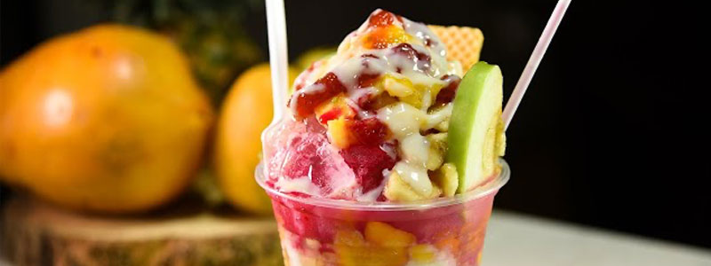
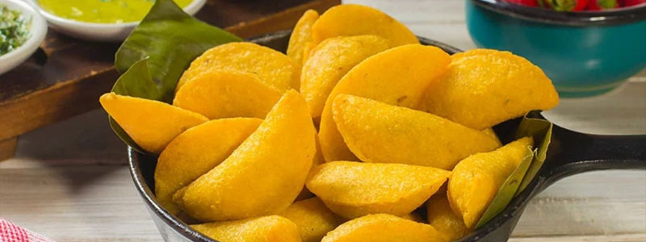
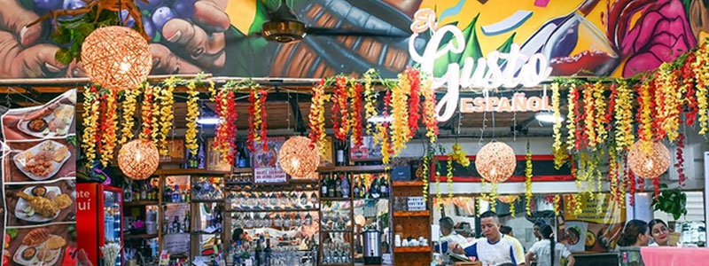
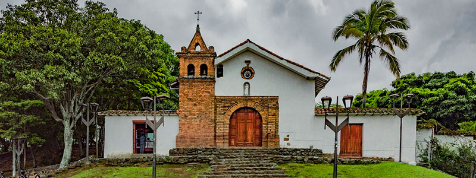
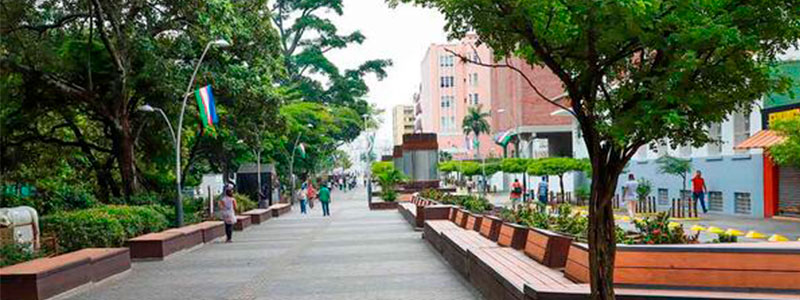

Donde comer
En este buscador, vas a poder filtrar por nombre, tipo de establecimineto y por barrio

En este buscador, vas a poder filtrar por nombre, tipo de establecimineto y por barrio

En Cali vas a encontrar platos tipicos y comida de todo el mundo

Conoce los patios y mercados en donde podes disfrutar de la mejor gastronomia de la ciudad
ver mas
Barrio tradicional de arquitectura colonial, artesanías y una vista panorámica de la ciudad desde su colina.

Paseo peatonal junto al río para caminar, apreciar la iglesia neogótica y visitar el Parque del Gato de Tejada.